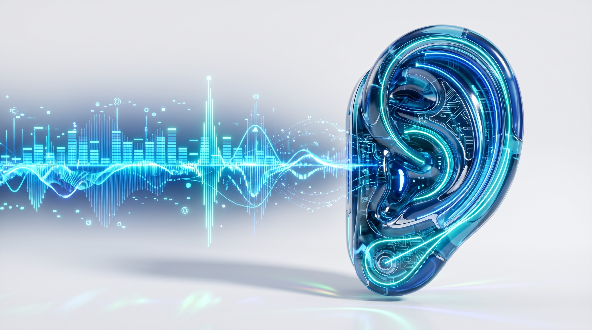
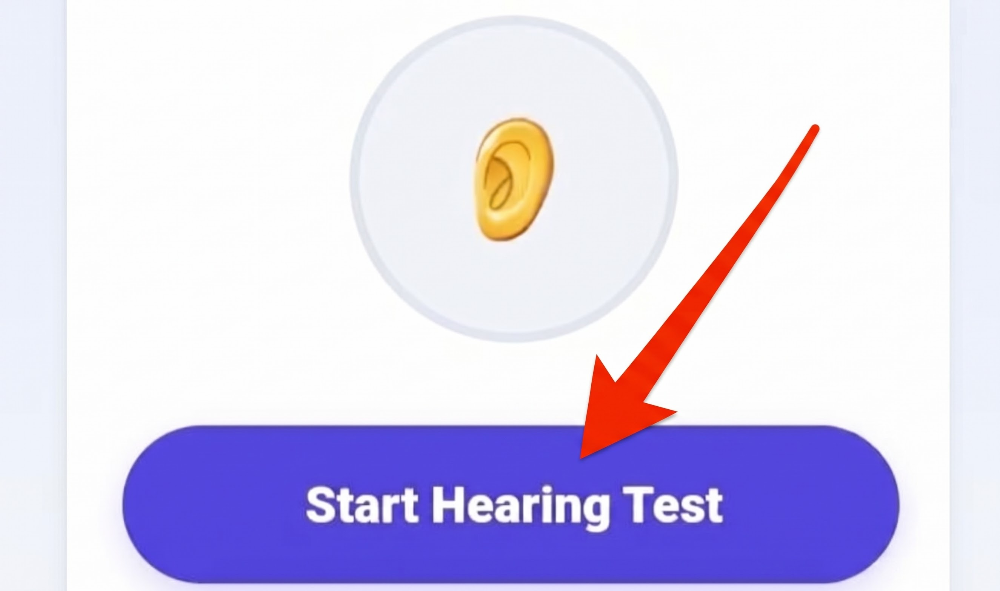

Online Hearing Test
Evaluate your ear frequency sensitivity across key auditory octaves. Generate pure mathematical sine waves from 250 Hz to 16,000 Hz directly in your browser.
👂
Selected: 250 Hz
Evaluate your ear frequency sensitivity across key auditory octaves. Generate pure mathematical sine waves from 250 Hz to 16,000 Hz directly in your browser.

The human auditory system is one of nature’s most sophisticated sensory transductive mechanisms, capable of deciphering sound vibrations spanning from 20 Hz (deep resonant bass) up to 20,000 Hz (ultra-high frequency treble). Sound waves travel down the ear canal, striking the tympanic membrane (eardrum) and setting three miniature middle-ear bones (malleus, incus, and stapes) into mechanical vibration. These ossicles amplify the kinetic energy, transmitting hydraulic waves into the fluid-filled cochlea of the inner ear.
Inside the cochlea lies the basilar membrane, which operates on an acoustic architectural principle known as tonotopy. The physical base of the cochlear spiral, which is narrow and stiff, resonates exclusively in response to high-frequency sounds like 8,000 Hz and 16,000 Hz. As the membrane spirals toward the apex, it becomes wider and more flexible, registering low-frequency tones down to 250 Hz. Thousands of microscopic stereocilia (hair cells) lining the membrane bend in response to these vibrations, triggering electrical impulses transmitted directly along the auditory nerve to the brain's temporal lobe.
Unlike muscle tissue, mammalian auditory hair cells do not regenerate once damaged. Because incoming acoustic waves must physically traverse the base of the cochlea regardless of their destination frequency, the hair cells tuned to high-frequency tones experience constant physical wear and tear throughout life. This inevitable biological aging process is termed presbycusis.
In the digital age, regular exposure to noisy urban traffic, loud concerts, and high-volume headphone listening accelerates high-frequency threshold shifts. People typically notice difficulty hearing upper sibilants in speech (like the letters s, f, and th) before realizing they have experienced hearing degradation. Periodic testing across key reference octaves—such as 4 kHz, 8 kHz, 12 kHz, and 16 kHz—serves as an invaluable benchmark for monitoring your auditory health over time.
Real-world sounds, musical instruments, and speech are complex acoustic cocktails comprised of fundamental pitches and dozens of layered harmonic overtones. If a testing tool played an ordinary MP3 bell tone or recorded chime, you might hear the lower harmonic resonance of the sound even if your ear could not perceive the primary high-frequency pitch.
The MiMusic Online Hearing Test utilizes hardware-accelerated OscillatorNode instances native to the Web Audio API to synthesize mathematically pristine sine waves. A pure sine wave possesses zero harmonic distortion and zero sideband overtones; 100% of the acoustic energy is concentrated strictly at the target hertz frequency. This allows you to verify your genuine auditory reception at each discrete octave band without acoustic artifacts muddying the results.
For the most reliable self-assessment, follow this calibrated procedure:

Wear stereo headphones, set your device volume to a moderate level, and test each frequency band.
While this tool is engineered with pure mathematical synthesis, it is designed strictly for educational awareness, headphone frequency checking, and personal auditory tracking. Consumer headphones, Bluetooth codecs, and smartphone DACs do not have calibrated flat frequency curves. This test does not replace an official pure-tone clinical audiometry exam conducted in a sound-dampened chamber by a licensed audiologist.
Losing the ability to hear above 12 kHz to 16 kHz is a natural biological consequence of aging (presbycusis) and lifestyle noise exposure. Most healthy adults over age 25 have a practical ceiling between 14 kHz and 16 kHz. Additionally, many consumer earbuds naturally roll off response above 15 kHz.
Smartphone and laptop speakers possess tiny physical cones that produce heavy harmonic distortion when pushed to high frequencies. Quality headphones channel pure sine waves directly into your ear canal without room reflections or speaker hardware distortion.
Yes. Never crank your device volume to maximum in an attempt to hear faint high-frequency tones. Pumping high-decibel energy into the ear can cause acute acoustic trauma or trigger temporary tinnitus. Always keep your volume at a moderate, comfortable baseline.
No. While this tool accurately generates pure frequencies, genuine clinical diagnoses require calibrated decibel hearing level (dB HL) equipment, bone-conduction transducers, and soundproof test environments administered by a licensed doctor.